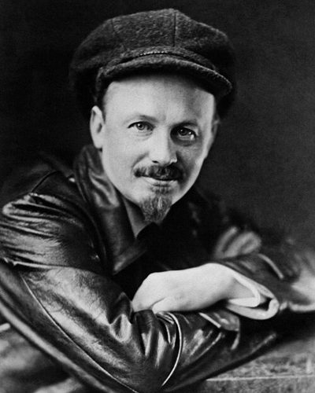

Ideologies / Radical Left
What is Bukharinism (Right Opposition)?
Bukharinism (Right Opposition) is a political ideology in the Radical Left family. Published in Pravda as Stalin turned towards forced industrialisation. Bukharin argues that industry and agriculture must grow in balance, that planning targets cannot exceed the materials actually available, and that squeezing the peasantry to pay for heavy industry would break the alliance of workers and peasants on which Soviet power rested. He defends the mixed economy of the New Economic Policy, with state industry trading with peasant farms through the market, while keeping the rule of the single party. The article was condemned as a right deviation.
Socialism built gradually, in alliance with the peasantry.
Defined from: Nikolai Bukharin, Notes of an Economist (1928)
See how close you are to Bukharinism (Right Opposition) Dare a friend to answer as one

_Crop.jpg){kind=link}
Where Bukharinism (Right Opposition) stands on 13 axes
Each axis runs from 0 to 100. A score of 50 is the middle. On a classic compass it sits in the Authoritarian Left quadrant.
| Axis | Position | Score | In words |
|---|---|---|---|
| EconomyMarket to Planned | 60 | Leans Planned | |
| OwnershipPrivate to Collective | 75 | Strongly Collective | |
| RightsLiberty to Security | 80 | Strongly Security | |
| GovernmentDemocracy to Autocracy | 85 | Very strongly Autocracy | |
| StructureDecentralised to Centralised | 85 | Very strongly Centralised | |
| NationInternationalist to Nationalist | 50 | Balanced | |
| ImmigrationMulticulturalist to Assimilationist | 45 | Balanced | |
| ValuesProgressive to Traditional | 35 | Leans Progressive | |
| TechnologyAccelerationist to Precautionary | 25 | Strongly Accelerationist | |
| EnvironmentIndustrialist to Environmentalist | 20 | Strongly Industrialist | |
| ReligionSecular to Religious | 0 | Very strongly Secular | |
| MilitaryPacifist to Militarist | 55 | Balanced | |
| TradeFree Trade to Protectionist | 75 | Strongly Protectionist |
Ideologies closest to Bukharinism (Right Opposition)
Its opposite on this map is Tolstoyan Anarcho Pacifism, at 27%.
Parties near Bukharinism (Right Opposition)
- Communist Party of China of 1981China. Resolution on Certain Questions in the History of Our Party (1981)86% alike
- Communist Party of China of 1940China. On New Democracy (1940)82% alike
- Communist Party of CubaCuba. Conceptualización del Modelo Económico y Social Cubano (2021)82% alike
- Convention People's PartyGhana. Programme for Work and Happiness (1962)82% alike
Common questions
What is Bukharinism (Right Opposition)?
Bukharinism (Right Opposition) is a political ideology in the Radical Left family. Published in Pravda as Stalin turned towards forced industrialisation. Bukharin argues that industry and agriculture must grow in balance, that planning targets cannot exceed the materials actually available, and that squeezing the peasantry to pay for heavy industry would break the alliance of workers and peasants on which Soviet power rested. He defends the mixed economy of the New Economic Policy, with state industry trading with peasant farms through the market, while keeping the rule of the single party. The article was condemned as a right deviation.
What does Bukharinism (Right Opposition) believe?
In one line: Socialism built gradually, in alliance with the peasantry. Its strongest positions are Secular, Autocracy, Centralised. Published in Pravda as Stalin turned towards forced industrialisation. Bukharin argues that industry and agriculture must grow in balance, that planning targets cannot exceed the materials actually available, and that squeezing the peasantry to pay for heavy industry would break the alliance of workers and peasants on which Soviet power rested. He defends the mixed economy of the New Economic Policy, with state industry trading with peasant farms through the market, while keeping the rule of the single party. The article was condemned as a right deviation.
Who founded Bukharinism (Right Opposition)?
Bukharinism (Right Opposition) is defined here from Notes of an Economist (1928) by Nikolai Bukharin. The thinker most tied to it is Nikolai Bukharin (1888 to 1938).
Is Bukharinism (Right Opposition) left wing or right wing?
On a classic two axis compass Bukharinism (Right Opposition) falls in the Authoritarian Left quadrant, which means the economic left and the authoritarian side. Left and right hide a lot, though, which is why EthosScales scores it on thirteen separate axes.
How is Bukharinism (Right Opposition) different from Nkrumaism?
They are close: 87% alike. The biggest gaps are on Economy, where Bukharinism (Right Opposition) scores 60 and Nkrumaism scores 85, and Religion, where Bukharinism (Right Opposition) scores 0 and Nkrumaism scores 20. On each axis, 0 is one end and 100 is the other.
Think this is wrong? Suggest a correction. The scores are editorial estimates.